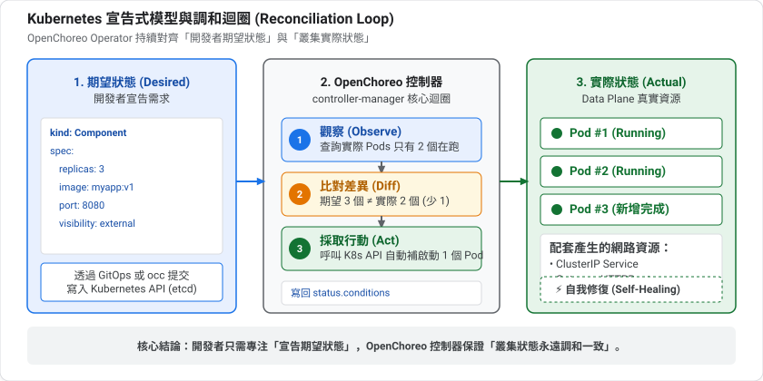
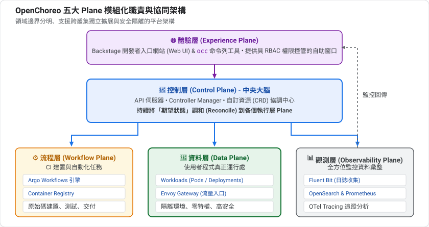
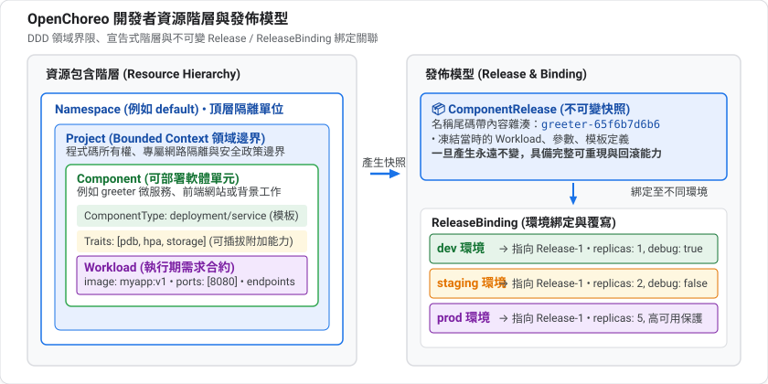
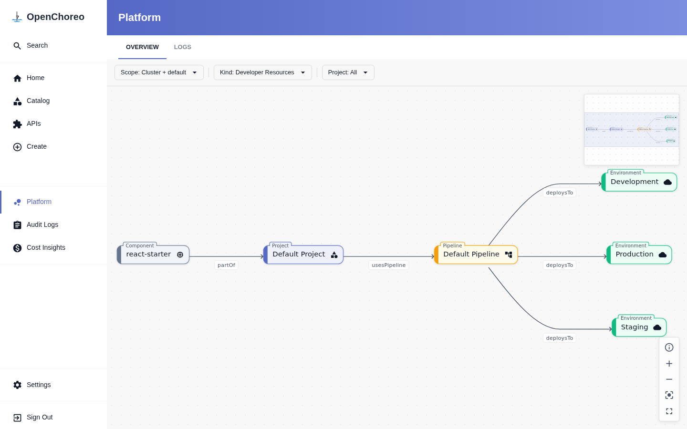

kubectl,且能連到 k3d 叢集(或在 Dev Container 內操作)kubectl 把概念對應到真實的資源要看懂 OpenChoreo 的架構,必須先理解 Kubernetes 一個最核心的設計。
命令式(Imperative) | 宣告式(Declarative) | |
你說什麼 | 「啟動 3 個副本」 | 「我要有 3 個副本」 |
重複執行 | 可能多啟動一次 | 結果相同,安全 |
出狀況 | 你必須自己發現並處理 | 系統自己補回來 |
Kubernetes 是宣告式的:你描述期望狀態(desired state),系統負責讓**實際狀態(actual state)**追上它。
負責「讓實際追上期望」的程式叫 控制器(Controller),它永遠在跑一個迴圈:

例子:你宣告 replicas: 3,但有一個 Pod 當機了。控制器發現「實際 2 個、期望 3 個」,就補啟動一個。你完全不用介入。
Kubernetes 內建的資源種類(Pod、Deployment...)是固定的。CRD(CustomResourceDefinition) 讓你新增自己的資源種類,例如 Component。
只有 CRD 還不夠,還需要一個懂得處理它的控制器。這個「CRD + 控制器」的組合就是 Operator 模式。
OpenChoreo 本質上就是一組 CRD 加上一群控制器。 第 1 課你在叢集裡看到的 controller-manager,就是這些控制器所在的地方。你寫 Component,控制器負責把它變成真正的 Deployment、Service 等資源。
Positive : 這解釋了為什麼 OpenChoreo 和 GitOps 工具天生合得來(第 6 課):兩者都建立在「宣告期望狀態、持續調和」的同一個模型上。
「Plane」可以理解成「平面」或「層」。OpenChoreo 把不同職責放在不同的 Plane,理由和大型組織的分工很像:
類比 | 對應 |
公司總部:制定規則、管理所有分店 | Control Plane |
分店:真正服務客人的地方 | Data Plane |
中央廚房:大量準備共用的東西 | Workflow Plane(建置) |
品管與監視中心 | Observability Plane |
櫃檯與服務窗口 | Experience Plane(CLI 與入口網站) |
拆開的好處:
在本機實驗時,所有 Plane 擠在同一個叢集;正式環境可以拆開。概念不變。
下面會提到 Project 是一個 bounded context。這是領域驅動設計的詞彙:把「彼此關係緊密、共同完成一個商業能力」的東西圈成一個邊界。例如「訂單」和「付款」可能各自是一個 Project。邊界內可以自由溝通,跨邊界則要透過明確的介面。這也是為什麼 Project 同時是安全與網路的邊界。
準備好了,看看實際的架構。
OpenChoreo 採模組化多 Plane 架構,各 Plane 職責清晰、彼此解耦,可以跑在同一個叢集,也可以跨多個雲端與實體叢集分散部署。
Plane | 白話定位 | 底層核心技術與元件 | 具體職責與運作內容 |
Experience Plane | 「統一門戶」 | • Backstage (Web Portal) | 消除 Kubernetes 的認知負載,提供不需要碰千行 YAML 的自服務介面。讓工程師自助瀏覽專案拓撲、點擊發布、檢視即時日誌與端點。 |
Control Plane | 「平台大腦」 | • openchoreo-api (REST API) | 全系統的狀態管理中心。持有核心 CRD(Component、Release、Pipeline),將開發者的宣告意圖結合平台工程師制定的防護規範(CEL 驗證、Golden Path),調和並生成發布快照。 |
Workflow Plane | 「打包工廠」 | • Argo Workflows | 專門執行會動用外部或未受信任程式碼的任務。拉取 Git 原始碼、跑單元測試、依 Dockerfile 建置映像、推送到倉庫,最後產出不可變發布製品(Release)。 |
Data Plane | 「線上門市」 | • 使用者業務 Pods (微服務、網站) | 真正服務終端使用者的執行期。負責 Pod 高可用調度、服務間 mTLS 加密、零停機滾動發布、Gateway 路由轉發與水平自動擴展(HPA)。 |
Observability Plane | 「品管與安監中樞」 | • OpenTelemetry Collector | 跨所有平面收集日誌、分散式追蹤(Tracing)、性能指標與操作審計,並將遙測數據反哺給 Experience Plane,讓工程師在 Web 介面開箱即用。 |

初學者常望文生義,以為 Data Plane 是「存放資料庫(MySQL/Postgres)或大數據」的地方。但在電腦網路(SDN)與雲原生分散式系統的經典術語中:
因此,Data Plane 在 OpenChoreo 中同時涵蓋了兩大關鍵能力:
19080 埠),依據 Gateway API 的 HTTPRoute 規則,知道該將路徑路由至後端哪一個微服務。簡而言之:Control Plane 負責「指揮調度」,Workflow Plane 負責「編譯打包」,而 Data Plane 則是「接待終端流量、運行微服務算力」的實體戰場！
五大 Plane 絕非各自獨立的孤島,而是形成緊密相扣的端到端閉環:
Experience Plane): 開發者在 Backstage 介面點擊「Build Latest」或透過 Git Push 觸發建置。Control Plane): 控制平面驗證權限與參數 schema,建立 WorkflowRun 資源,並指派任務至工作流平面。Workflow Plane): Argo Workflows 啟動獨立 Pod 執行 Checkout ➔ Build ➔ Publish,完成後產出不可變的 ComponentRelease 並回報控制平面。Data Plane): 控制平面根據環境配置(如 Development)渲染出具體的 Workload 資源,下發至資料平面。Data Plane 啟動應用 Pod,並由 Envoy 閘道配置對外路由。Observability Plane): 應用執行產生的日誌與指標由 Fluent-bit 與 OTel 收集彙整,並即時傳回 Experience Plane 供開發者除錯。在實體生產環境中,Data Plane 與 Workflow Plane 往往分散在不同的實體 Kubernetes 叢集(例如正式生產與測試環境實體隔離):
cluster-agent,主動以 gRPC + mTLS 向 Control Plane 建立安全出站連線。根據現代軟體組織的「團隊拓撲」(Team Topologies),不同角色關注的層次截然不同:
團隊角色 (Persona) | 主要關注的 Plane | 他們最關心的核心價值與日常操作 |
業務應用開發者 | Experience Plane | • 「我的程式碼跑成功沒?建置有沒有噴錯?」(看 BUILD) |
平台工程師 | Control Plane | • 打造黃金路徑(Golden Path):定義標準的 |
資安與架構工程師 | Workflow Plane | • 高風險建置隔離:CI 會執行外部不可信的指令( |
SRE 與維運團隊 | Data Plane | • 高可用與穩定性:關注 Data Plane 節點容量、Envoy 閘道流量、零停機滾動發布。 |
這個分工是 OpenChoreo 的核心想法:平台工程師定義護欄與模板,開發者在護欄內自助。
Positive : 在第 1 課的本機安裝裡,這些 Plane 全部壓在同一個 k3d 叢集上;正式環境可以拆開。Workflow 與 Observability Plane 就是 --with-build、--with-observability 所啟用的部分。
資源階層與發佈關聯：

在入口網站的 Platform 視圖中，也能直觀看到 Component、Project、Pipeline 與 Environments 的動態相依拓撲：

一個 bounded context(領域驅動設計 DDD 的概念),把同一個商業能力的 Components 分組,是程式碼擁有權、部署與營運的邊界。Project 對應到隔離的命名空間、網路邊界與安全政策;同一 Project 內的 Components 可以自由互相通訊。
Project 宣告實例apiVersion: openchoreo.dev/v1alpha1
kind: Project
metadata:
name: ecommerce
namespace: default
spec:
deploymentPipelineRef:
kind: DeploymentPipeline
name: default
spec.deploymentPipelineRef: 明確指定此專案遵循哪一條環境晉升流水線(如 Dev ➔ Staging ➔ Prod),確保專案下的所有元件共用相同的發布流程。一個可部署的軟體單元:微服務、網站或背景工作。開發者透過 Component CRD 宣告元件的靜態歸屬與治理特性:
Component.spec 核心欄位詳解欄位 | 型別 / 必要性 | 說明與底層機制 |
| 字串 / 必填 | 指定該元件屬於哪個 |
| 物件 / 必填 | 模板參照。需指定 |
| 布林值 / 選填 | 建立或更新後,是否自動部署到流水線的第一個環境(如 |
| 布林值 / 選填 | 原始碼推送到 Git 倉庫時是否透過 Webhook 自動觸發建置,預設為 |
| 物件 / 選填 | 傳遞給 ComponentType 的自訂參數,跨環境一致(如特定業務標籤或旗標)。 |
| 物件陣列 / 選填 | 為該元件附加的可重用能力(如存儲掛載、自動擴縮、安全標籤),可多次實例化。 |
| 物件 / 選填 | 從原始碼建置時的工作流參照與參數(指定 Git 倉庫 URL、分支、建置參數,詳見第 4 課)。 |
Component 的執行期合約:描述「應用在執行時需要什麼環境」,而不是「平台底層怎麼實作」。
Workload.spec 核心欄位詳解欄位 | 型別 / 必要性 | 說明與底層機制 |
| 物件 / 必填 | 綁定所屬關係,包含 |
| 物件 / 必填 | 容器規格:包含 |
| 字典映射 / 選填 | 網路端點宣告(鍵名為端點名稱,如 |
| 物件 / 選填 | 微服務與受管資源相依性宣告: |
Component + Workload 協同宣告以下是一個生產級微服務的完整開發者宣告範例：
# 1. Component: 宣告我是誰、屬於哪個專案、採用什麼平台模板
apiVersion: openchoreo.dev/v1alpha1
kind: Component
metadata:
name: order-service
namespace: default
spec:
owner:
projectName: ecommerce
autoDeploy: true
componentType:
kind: ClusterComponentType
name: deployment/service
---
# 2. Workload: 宣告執行期需要的容器映像、對外埠號與跨微服務呼叫依賴
apiVersion: openchoreo.dev/v1alpha1
kind: Workload
metadata:
name: order-service-workload
namespace: default
spec:
owner:
componentName: order-service
projectName: ecommerce
endpoints:
http:
type: HTTP
port: 8080
visibility: [external]
dependencies:
endpoints:
- component: payment-service
name: http
visibility: project
envBindings:
url: PAYMENT_SERVICE_URL # 平台自動將依賴服務的 URL 注入此環境變數
container:
image: "ghcr.io/openchoreo/samples/order-service:v1.0"
env:
- key: LOG_LEVEL
value: "info"
Positive : 你隨時可以在終端機透過 kubectl explain component.spec 或 kubectl explain workload.spec 查詢最權威的叢集即時欄位手冊！
Resource 宣告實例apiVersion: openchoreo.dev/v1alpha1
kind: Resource
metadata:
name: redis-cache
namespace: default
spec:
owner:
projectName: ecommerce
type:
kind: ClusterResourceType
name: valkey
平台資源是平台工程師 (Platform Engineers) 的核心戰場。開發者之所以能只寫 40 行極簡 YAML 就上線服務,是因為平台工程師預先定義了護欄 (Guardrails)、部署模板 (Golden Path) 與環境拓撲。
ClusterComponentType：元件架構黃金模板ClusterComponentType 是平台的靈魂。它將開發者的業務參數代入模板,自動生成 Deployment、Service、HTTPRoute、NetworkPolicy 等原生 Kubernetes 資源。
ClusterComponentType 規格範例 (以內建的 deployment/service 為例)apiVersion: openchoreo.dev/v1alpha1
kind: ClusterComponentType
metadata:
name: service
spec:
workloadType: deployment
allowedTraits:
- kind: ClusterTrait
name: horizontal-pod-autoscaler
- kind: ClusterTrait
name: health-probes
allowedWorkflows:
- kind: ClusterWorkflow
name: dockerfile-builder
environmentConfigs:
openAPIV3Schema:
properties:
cpu:
type: string
default: "100m"
memory:
type: string
default: "256Mi"
replicas:
type: integer
default: 1
核心區塊 | 作用與平台工程意涵 |
| 指定基礎負載類型,目前支援 |
| 能力護欄。白名單限制該元件類型允許掛載哪些附加能力(如只允許 HPA 與探針,防止隨意掛載非核准套件)。 |
| 建置護欄。限制該元件允許使用哪些工作流從原始碼建置。 |
| 跨環境規格 Schema。定義在不同環境中允許覆寫的參數(如每個環境的 CPU、記憶體與複本數)。 |
ClusterTrait：可重用附加能力實踐「組合優於繼承」原則。當元件需要水平自動擴縮(HPA)或儲存卷時,不需重寫 ComponentType,而是以 Trait 附加能力。
ClusterTrait 規格範例 (以 HPA 為例)apiVersion: openchoreo.dev/v1alpha1
kind: ClusterTrait
metadata:
name: horizontal-pod-autoscaler
spec:
parameters:
openAPIV3Schema:
properties:
minReplicas:
type: integer
default: 2
maxReplicas:
type: integer
default: 10
targetCPUUtilization:
type: integer
default: 80
Environment：部署階段與實體算力平面錨點Environment 是控制平面的邏輯抽象,透過 spec.dataPlaneRef 將邏輯環境釘選到實體承載流量的 Kubernetes 叢集(ClusterDataPlane)。
Environment 規格範例apiVersion: openchoreo.dev/v1alpha1
kind: Environment
metadata:
name: development
namespace: default
spec:
dataPlaneRef:
kind: ClusterDataPlane
name: default
isProduction: false
spec.dataPlaneRef: 指定此環境的 Workload 該派發到哪一個 ClusterDataPlane 實體叢集。spec.isProduction: 標記是否為生產環境。若為 true,平台會強制套用更嚴格的防護規範與審批條件。DeploymentPipeline：環境晉升有向圖DeploymentPipeline 規定了微服務在各環境間「可以怎麼晉升」,本質上是一張有向無環圖 (DAG)。
DeploymentPipeline 規格範例apiVersion: openchoreo.dev/v1alpha1
kind: DeploymentPipeline
metadata:
name: default
namespace: default
spec:
promotionPaths:
- sourceEnvironmentRef:
kind: Environment
name: development
targetEnvironmentRefs:
- kind: Environment
name: staging
- sourceEnvironmentRef:
kind: Environment
name: staging
targetEnvironmentRefs:
- kind: Environment
name: production
ClusterDataPlane：實體運算平面合約宣告承載業務負載的 Kubernetes 叢集規格,包含外部 Envoy 閘道監聽埠、mTLS 客戶端連線憑證與可觀測性關聯。
ClusterDataPlane 規格範例apiVersion: openchoreo.dev/v1alpha1
kind: ClusterDataPlane
metadata:
name: default
spec:
planeID: default
gateway:
ingress:
external:
http:
host: openchoreoapis.localhost
listenerName: http
port: 19080
name: gateway-default
namespace: openchoreo-data-plane
clusterAgent:
clientCA:
value: "-----BEGIN CERTIFICATE-----\n..."
observabilityPlaneRef:
kind: ClusterObservabilityPlane
name: default
spec.gateway.ingress.external: 規範微服務對外開放的 Envoy 閘道網址後綴與負載平衡連接埠(19080)。spec.clusterAgent.clientCA: 遠端叢集 Agent 建立反向 mTLS 零信任連線時驗證所需的憑證。ReleaseBinding：不可變快照釘選與環境覆寫實踐 Twelve-Factor App 的「程式碼與環境設定分離」原則。將不可變的快照(ComponentRelease)釘選在特定環境,並注入環境專屬設定。
ReleaseBinding 規格範例apiVersion: openchoreo.dev/v1alpha1
kind: ReleaseBinding
metadata:
name: order-service-development
namespace: default
spec:
environment: development
owner:
componentName: order-service
projectName: ecommerce
releaseName: order-service-94d009af # 釘選特定內容雜湊的不可變快照
state: Deploy
environmentConfigs: # 環境專屬覆寫
replicas: 1
欄位 | 說明與底層機制 |
| 綁定至哪一個環境(如 |
| 不可變製品名稱。帶有內容雜湊,代表此環境目前運行哪一個版本。版本晉升(Promotion)與回滾本質上只是修改這個字串。 |
| 部署狀態,可設為 |
| 環境覆寫。例如 development 環境複本數設為 1,production 環境設為 5,不動底層程式碼。 |
Positive : 帶有 Cluster 前綴的類型(如 ClusterComponentType、ClusterDataPlane)是叢集範圍的共用版本,可跨 namespace 使用;沒有前綴的是 namespace 範圍。
OpenChoreo 用不可變的 Release 管理全系統變更,形成嚴謹的四步發布閉環:
[開發者變更 Component] ──▶ 控制器自動生成不可變快照: [ComponentRelease]
│
[平台工程師設定 Pipeline] ──▶ 釘選版本與環境專屬覆寫: [ReleaseBinding]
│
控制器自動編譯並渲染完整 K8s 清單: [RenderedRelease]
│
cluster-agent 透過 mTLS 下發至資料平面: [Data Plane (dp-*)]
ComponentRelease。ReleaseBinding,將特定 Release「釘」在該環境中。RenderedRelease。把概念對應到真實叢集。先看你有哪些 OpenChoreo 的 CRD:
kubectl api-resources --api-group=openchoreo.dev
查看已有的 Project、Environment、Component:
kubectl get project,environment,component -A
查看已連線的 Data Plane 及其狀態:
kubectl get clusterdataplane -o wide
用 occ 看同樣的事(需先安裝並登入,見第 3 課):
occ namespace list
occ project list -n default
occ component list -n default
Control Plane 裡的 Component 只是「宣告」,實際的 Deployment、Service 等在 Data Plane 的獨立 namespace:
# 1. 檢視跨平面的交付契約 (RenderedRelease)
kubectl get renderedrelease -A
# 2. 檢視 Data Plane 平台中樞組件 (Envoy 閘道與通訊代理)
kubectl get pods,svc -n openchoreo-data-plane
# 3. 檢視 Data Plane 的業務隔離命名空間與實體負載
kubectl get ns | grep dp-
kubectl get deployment,svc -A -l openchoreo.dev/component=react-starter
Negative : 如果最後一個指令沒有輸出,可能是 label 或 Component 名稱和你的環境不同。先用 kubectl get component -A 確認名稱。這些 label 與 namespace 命名是依官方文件整理,請以你叢集的實際輸出為準。
react-starter 在 Control Plane 與 Data Plane 各留下了哪些資源?試著不看上文回答下面的問題;答不出來的,回頭看對應的章節。
replicas: 3 舉例。概念 | 一句話 |
Plane | 五種職責分離的執行層 |
Project | 領域邊界,Component 的分組 |
Component | 可部署單元 = 類型 + 參數 + Trait + Workflow |
Workload | 執行期合約:容器、端點、依賴 |
Environment | 綁定 DataPlane 的部署階段 |
Release / ReleaseBinding | 不可變版本與其在各環境的釘選 |
03:部署你的第一個 Component — 自己寫 YAML,用 occ 與 kubectl 部署。